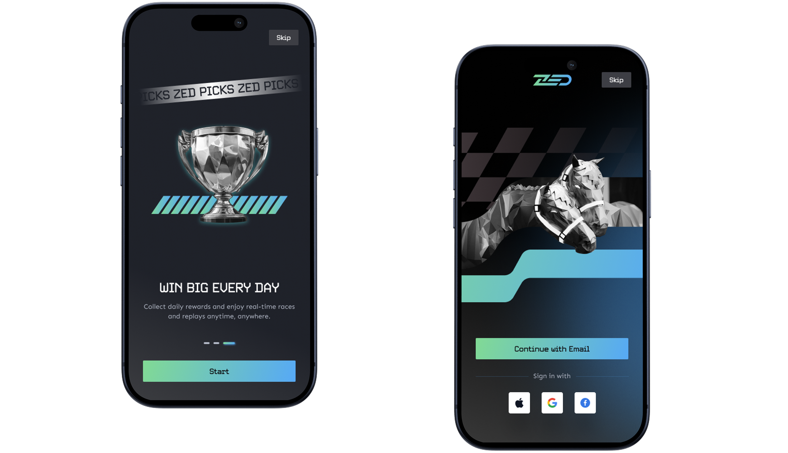
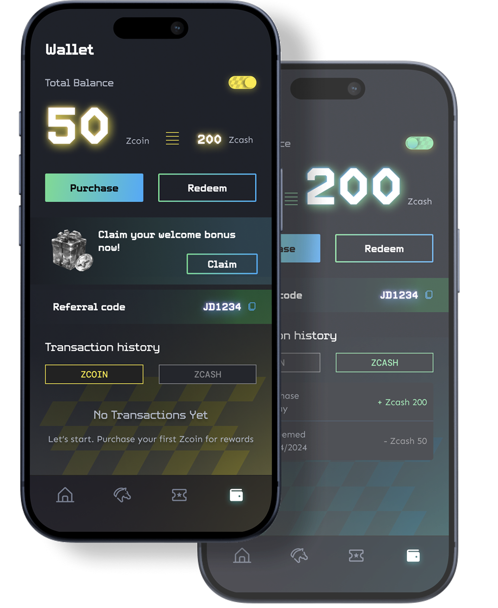
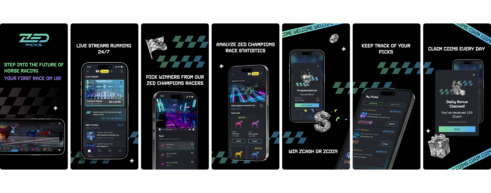
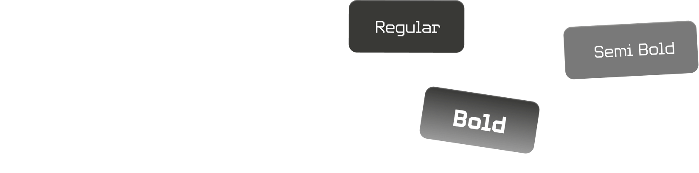

ZED Picks expands ZED RUN's market by targeting non-Web3 users through a frictionless, mobile-first betting experience. It increases user acquisition, lowers education costs, and builds a scalable value funnel toward the more immersive ZED platform — creating long-term value through progressive engagement.
As Senior Product Designer at DreamWalk, I led end-to-end UX/UI design from research through to delivery — working closely with product, engineering, and the ZED RUN brand team.
A quick introduction to ZED RUN's web-based racing experience and digital horse racing ecosystem. ZED Picks was designed as a mobile-first extension of this world, making the racing experience more accessible for casual users.
ZED RUN's existing platform demanded significant crypto literacy to participate — wallets, gas fees, NFT ownership. This created an enormous barrier to entry for the mainstream audience.
The platform was missing a massive opportunity to onboard non-Web3 users who were interested in horse racing and competitive gaming but couldn't — or wouldn't — engage with NFT ownership.
This key insight, surfaced from 12 one-on-one interviews, became our north star throughout the design process. Every decision was filtered through a single question: does this add friction or remove it?
Mapping the end-to-end experience for Jordan — the Casual Bettor — from first discovery through to placing his first bet and coming back.
A dark-first interface channelling the energy of live horse racing — fast, visceral, and instantly comprehensible. Every screen reduces cognitive load while maximising emotional thrill.

One of the biggest challenges with ZED RUN was onboarding mainstream users who had no interest in learning wallets, crypto mechanics, or NFT ownership.
The onboarding experience was intentionally simplified to remove friction and create an immediate sense of excitement. Users could move from installation to their first race within minutes.

The race discovery experience was designed around short race cycles and rapid engagement.
Users can quickly understand race details, compare horses, review odds, and place picks without navigating through complex betting interfaces.

The emotional peak of the experience — a live race that builds tension, resolving into a celebratory win state with an immediate "race again" loop that captures momentum.

The wallet needed to support both ZCoin and ZCash without overwhelming new users with crypto concepts.
To reduce cognitive load, I introduced a simple toggle pattern that allows users to switch between currencies while maintaining a consistent mental model.
The goal was to make the system feel approachable for mainstream users while preserving flexibility for more advanced users.

Moments such as rewards, referrals, successful redemptions, and race reminders were intentionally designed to feel celebratory and memorable.
Rather than relying on standard system notifications, the experience uses custom illustrations, motion-inspired graphics, and racing-themed visual language to reinforce the brand personality.
These moments transform functional interactions into rewarding experiences and help strengthen long-term engagement.

A scalable dark-first design system built to serve both ZED Picks and the broader ZED RUN ecosystem — logo, colour, type, and a library of graphic elements.




Campaign artwork and promotional visuals extend the product world beyond the app — carrying the same energy into launch and acquisition.

Every interaction in ZED Picks was designed to amplify the emotional arc of placing a bet and watching a race. The micro-interaction system makes each tap feel responsive and rewarding — driving engagement through feedback loops and celebratory moments.
Motion design plays a central role: race animations build tension, win states erupt with satisfying particle effects, and the live race progress bar creates edge-of-seat engagement even for a race lasting under 60 seconds.
ZED Picks was designed to deliver measurable business value — not just a polished experience. The product strategy was built around compounding outcomes that justify the investment for ZED RUN's long-term growth.
The goal was never to make a betting app. It was to make belonging feel effortless — a first handshake with a world that can become deeply engaging.